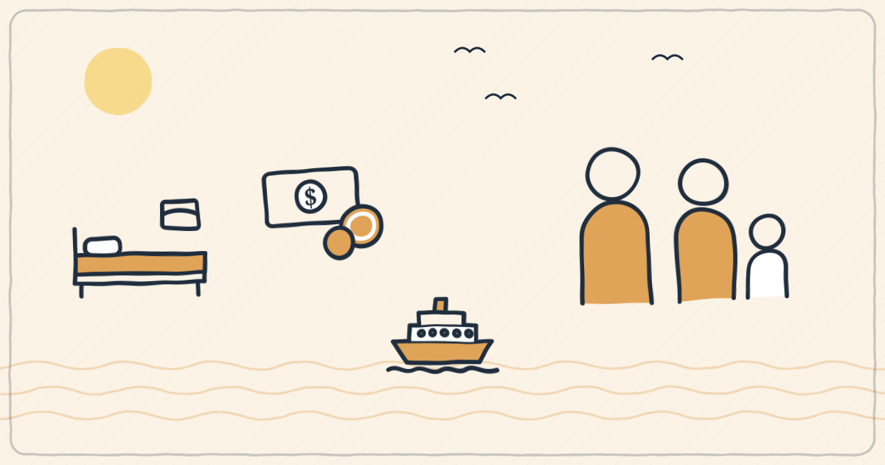

Two Connecting Cabins or One Suite: Which Costs Less?

For most families on mainstream lines, two connecting balcony cabins cost less than one family suite and give you two bathrooms and a door that closes. A suite wins only when a promotion narrows the gap to a few hundred dollars and you would use its perks. Price both for your exact sailing, gratuities included, before you decide.
Two connecting cabins usually come out cheaper than one suite for a family of four on a mainstream line, and they bring two bathrooms, two balconies and a door you can close at bedtime. The suite earns its premium when the gap is small, the children are young enough to sleep in the same room anyway, and you would use the included dining or priority boarding. Price both for your sailing, with gratuities, before you assume either way.
How much do two connecting cabins cost compared with a family suite?
Here is a template for a 7-night Caribbean cruise on a mainstream line at recent prices. Your ship and dates will differ, so treat the shape of the sum as the lesson.
| 7 nights, family of four | Two connecting balconies | One family suite |
|---|---|---|
| Fares, four people | About US$5,600 | About US$6,600 |
| Taxes and port fees | Same per person either way | Same per person either way |
| Daily gratuities for four | About US$510–560 | About US$580–640; suite rates run higher on most lines |
| Bathrooms | Two | One, sometimes one and a half |
| Balconies | Two standard | One, usually larger |
| Perks | None beyond the cabin | Priority boarding, possibly a lounge or included dining |
| Rough total | US$6,100–6,200, roughly C$8,400–8,600 | US$7,200–7,250, roughly C$9,900–10,000 |
In this example the two cabins save about US$1,000, close to C$1,400. That is the sum the suite has to justify with its perks and its single larger space.
Why the third and fourth guest fare matters so much
Cruise pricing is built around two adults per cabin. The first two guests pay the headline fare each. A third and fourth guest in the same cabin pay a lower rate, and during "kids sail free" promotions they may pay almost nothing beyond taxes, port fees and gratuities.
Two connecting cabins break that pattern. Each cabin now has two full-fare guests, so a family of four pays four adult fares instead of two adult fares and two reduced ones. In a promotion-heavy week the suite or a single large cabin can come within a few hundred dollars of the pair, and occasionally beat it.
The reverse also happens. On a sailing with no third-guest discount, two inside or ocean-view cabins can cost less than one balcony holding four, with twice the bathrooms. Price both configurations for your exact dates rather than lean on a rule of thumb.
What are suite perks actually worth to a family?
A perk is only worth money if you would otherwise have paid for it or it fixes a real problem. Go down the list for your line and level honestly.
Included specialty dining is the perk most likely to tip the sum. If you would have booked two or three specialty dinners at US$40–80 an adult anyway, that is a few hundred dollars back. If your children will eat in the buffet every night, it is worth nothing to you.
Priority boarding and disembarkation matters most with toddlers or a tight flight home, and little otherwise. A suite lounge or concierge is pleasant, but families with young children rarely sit in one. A single larger balcony is a real advantage on scenery routes; the best cabin and side for an Alaska cruise note explains why the view can be worth more there than on a port-heavy Caribbean week.
Add up only the perks you would use. If the total comes close to the price gap, the suite is a reasonable buy. If it does not, the two cabins win and you keep the second bathroom as a bonus.
When do two cabins clearly beat one suite?
Teenagers and adult children want a door between them and their parents, and a second bathroom stops the 7 a.m. queue. Light sleepers and early risers do better in separate rooms, and a connecting door is also the line of defence when one child is up at night; the note on kids and seasickness on a cruise covers the cabin choices that help when the sea gets lively.
Grandparents travelling with grandchildren almost always prefer the pair. Each generation gets its own space and the connecting door turns the two cabins into one apartment when everyone wants to be together.
The suite wins in a narrower set of cases: a promotion that shrinks the gap to a few hundred dollars, children young enough that a separate room would go unused, or a family that would happily pay for the dining or drinks the suite includes.
What booking rules catch families out with connecting cabins?
Two cabins mean two bookings, two cabin numbers and a few rules that a single suite never raises.
- Confirm they connect, not just adjoin. Deck plans mark connecting pairs with a small symbol between the cabin numbers. Adjoining cabins sit side by side with no inside door. Ask the agent to confirm in writing.
- Check the adult-per-cabin rule. Most lines require someone 21 or older in each cabin at booking, with an exception for children whose parents are in the connecting or directly adjoining cabin. The age and the exception vary by line, so read the rule for yours.
- Expect two onboard accounts. Each cabin gets its own folio. Link both to one card at check-in so the kids' sodas and your coffees land in one place.
- Compare gratuity rates. Suite guests usually pay a higher daily rate per person. Two standard cabins pay the standard rate four times.
- Ask about third and fourth guest pricing. On some sailings it exists only for one cabin type, which changes the whole comparison.
- Book the pair early. Connecting cabins are a small fraction of any ship and families book them first. The same scarcity applies if you are part of a group booking of eight or more cabins and want the connecting pairs held together; a big enough block can even make held connecting pairs one of the terms you negotiate with the group desk.
Paying for two cabins also doubles the currency question. The line will quote both in Canadian dollars if you book from Canada, and the note on paying for a cruise in CAD or USD explains when that helps and when your own card does better.
Is a suite plus a standard cabin the answer for big families?
Families of five or six sometimes find a third configuration: a suite that connects to a standard balcony cabin next door. The adults take the suite and its perks, the children get their own bathroom and balcony, and the family has one large shared space when the connecting door is open.
It can be the best of both worlds, with two caveats. Suite perks often extend only to the people booked in the suite, so children in the connecting cabin may not share priority boarding or the lounge. And these pairings are rarer than ordinary connecting cabins, so they sell out early, often a year or more ahead on popular school-holiday sailings.
Price all three side by side: two standard cabins, one suite, and the suite-plus-cabin pairing. For a family of five the third is often the only one that fits.
Want this checked for your own sailing? A licensed cruise consultant can price it up and answer questions for free, with no obligation.
Ask a cruise expert →Start with two cabins, then let the suite argue
Default to a pair of connecting cabins, then let the suite make its case on price and perks you would actually use. Price both for your dates with gratuities included, confirm the connecting door and the adult-per-cabin rule, and book early enough that the pair you want is still there.
Still wondering?
Are two cruise cabins cheaper than a suite?
Usually, but not by as much as you might think. The third and fourth guests in one cabin pay reduced fares, while two cabins carry four full fares. Promotions, the ship and the sailing date can flip the result, so compare both on your own dates.
Can kids stay in a connecting cabin without a parent?
Most big lines require an adult in every cabin at booking, but relax it for children whose parents are in the directly adjoining or connecting cabin. Some lines ask you to list one adult in each cabin and let the family sort out who sleeps where. Check your line's rule before you book.
What is the difference between adjoining and connecting cabins?
Connecting cabins have an interior door between them that you can lock or leave open. Adjoining cabins are simply next to each other with no inside door. Deck plans mark connecting pairs with a small symbol between the two cabin numbers; ask your agent to confirm before paying.